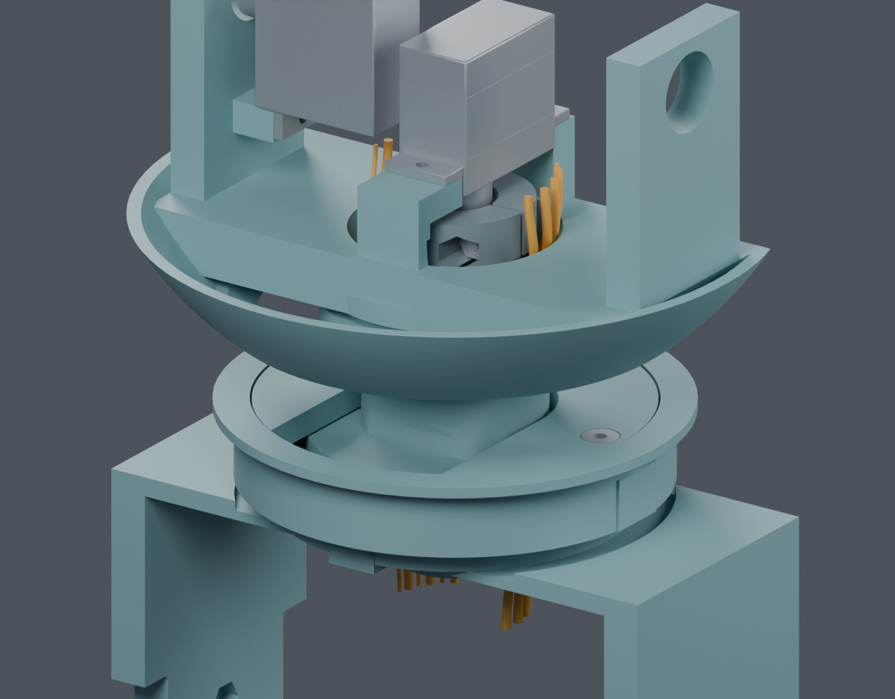
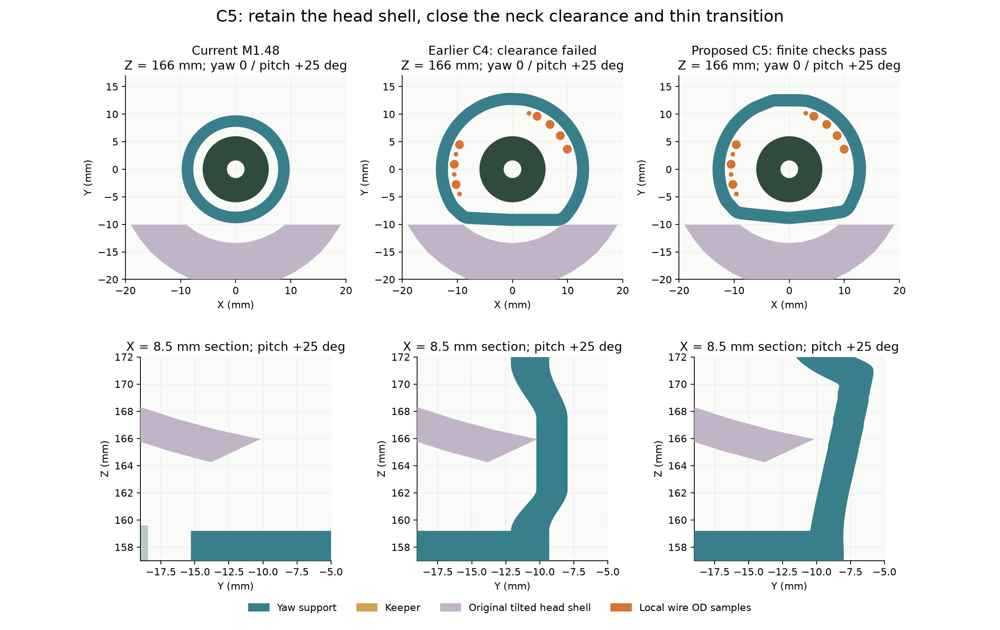
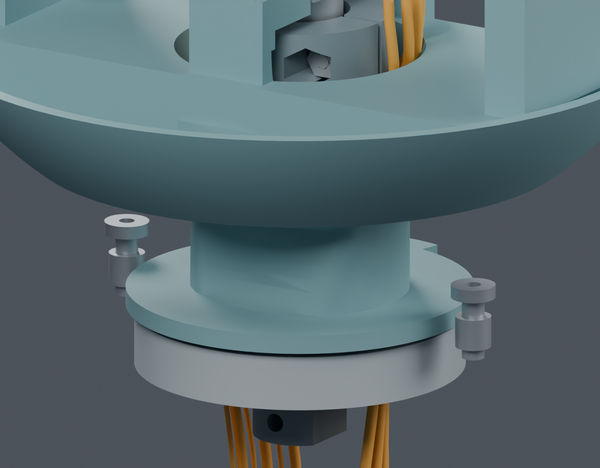

连续颈部通道已通过局部检查，等待结构方案确认
这是独立候选，主模型仍为M1.48。 需要更换轴承型号并调整三件现有打印件；完整线束尚未完成，未放行采购或制造。
| 方案取舍 | 具体变化 |
|---|
| 轴承 | 20×32×7 → 30×42×7（NSK6806ZZ目录边界）。轴承目录质量增加7g；整机质量仍需重算，价格及库存未确认。 |
| 支撑 | 调整固定桥、旋转支撑、防脱压板三件，不新增打印件或紧固件。原反力孔壁、承力连接、上部舵机座保留。 |
| 外观与位置 | 原头壳、屏幕、相机、舵机和压板紧固件位置保持，保留正常yaw±60° / pitch−20°～+25°。 |
| 局部数字结果 | 130姿态；最小已查头壳间隙0.420mm；过渡侧壁采样约2.228mm；11线局部与无软线刚体装入检查通过。 |

候选支撑；为观察隐藏头壳和屏幕等零件，检查仍包括它们。橙色为局部线材空间样本，尚未连接完整端口。

左：当前主模型；中：此前C4；右：C5。右下连续过渡解决了原薄壁与局部壳体接触；这是有限姿态和采样检查。

隐藏固定桥和压板后的细节。螺钉/嵌件因此悬空显示；不是最终装配状态。
还没有完成的内容
真实接口端部、实际线材与FFC、固定和应力释放、完整带线装配、供应商制作图及反力夹初装仍未完成。七根较粗线只是空间样本；这些局部几何通过不能证明实际线缆会自然保持数学路线。PA12强度、实际配合与磨损寿命需实物验证。
可编辑Blender候选 · 完整范围与来源 · 检查摘要 · 间隙与壁厚采样 · 装入与运动 · 完整剩余清单
PROTOTYPE / UNVALIDATED · 需要用户确认结构变更后才能应用。